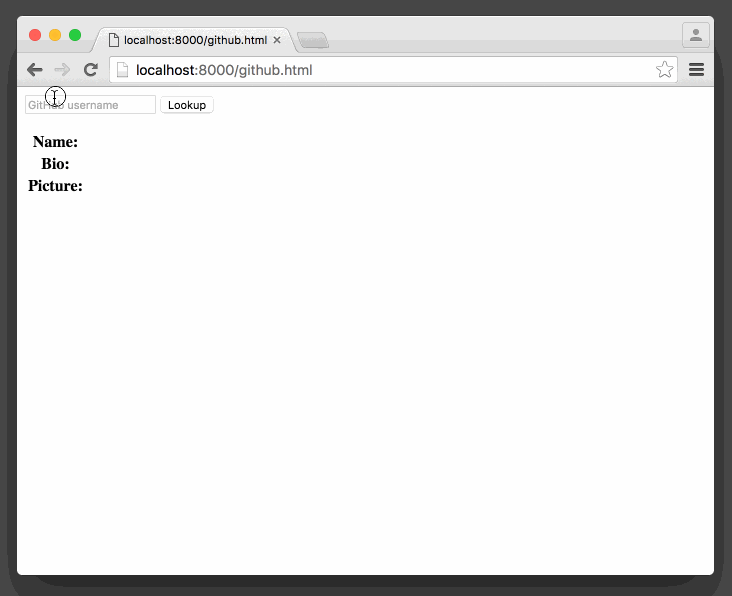

Week 6
Table of Contents
Resources
Objects
If you remember back to when we first started learning JS, we talked about objects. Everything is an object. An object, to reiterate, allows us to describe things in code. It could be something simple like a Number, something domain-specific like a Movie, or an abstract thing like an Element.
An object is a collection of properties (nouns) and methods (verbs). A method, remember, is just a fancy word for an object's functions. A Car object, for example, could have properties like color, make, and model. But it could also have methods like start(), stop(), lock(), and unlock().
We access the properties and methods of any object with a .. So, continuing with the car analogy, we would type car.color to access its color and car.start() to call the start method of the car.
So far, you've been utilizing pre-defined objects. Document, String, Element, Event, and Array are built into your browser. You don't have to define their properties and methods—you just follow the documentation. They're pre-baked, built-in objects that are ready for you to use.
You can also define your own objects. There's an easy way and an advanced way. We're going to learn the easy way, with generic objects. The advanced way involves declaring a class, which will allow you to construct instances of an object, for example new User().
Let's create a generic object, with a few properties and methods. Remember, we're not defining a new type of object. We're simply creating a container of nouns and verbs.
This is the 4th type of literal we've seen, where JS is able to create an object without refering to the object type. For example, when we write "hello", we're telling JS that we want a String, whose value is "hello" but we never need to say "String". Similarly if you just type 3.14 you'll get a Float even though you never had to type "Float". Here, we're instantiating a new Object just by using {}. If this is confusing, don't sweat it, it's just the theory behind the example.
All you need to know is that in that example, we're creating a plain vanilla object with a couple properties (firstName and lastName) and one method (fullName()). Notice that property names and the corresponding values are separated with a : and that property name/value pairs are separated with a ,. The way the function is defined is also a little different. The name of the function is now on the left.
The last thing to note is the use of this. this is a special keyword in JS and is a magically variable, whose value changes based on the context in which you reference it. Inside the getFullName() function, this refers to the user object. You could replace this with user and it would be the same. But using this allows us to reduce the repetition.
How is this useful?
In the last set of the quiz, we had three arrays. One for assignmentNames, one for assignmentDescriptions, and a third one for assignmentDueDates. We're storing data about an "assignment" between three arrays. We hope that if you reference the 2nd assignment of each array that you're talking about the same assignment. But that could easily cease to be true. If the arrays are reordered or get screwed up somehow then assignmentsNames[1] may not map to the description in assignmentsDescriptions[1].
Objects to the rescue! Rather than have the data about one thing be scattered across three variables, let's keep it together. Let's create a few "assignment" objects and then put those objects in an array.
Now, the data about each assignment is together. It's much less likely for there to be a mix up and if you loop through assignments now, you'll have everything about the assignment right there.
JSON
You just learned about objects, which allow you to organize shared properties and methods. Basically, it's a storage mechanism. If you know a bunch of details about a person, you can drop them inside {}, correlate the keys and values with a :, and separate each set of key/value pairs with a ,.
As it turns out, this is incredibly useful. It allows us basically describe anything and also send it back and forth.
GitHub, for example, exposes a special URL that returns all the details about a particular user.
There's a lot of data there but basically it's everything GitHub knows about "avand," a user in their system.
If you were to assign that object to a variable like user, you could access the user's bio by writing user.bio. If you wanted to know when that user was created, you would write user.created_at. Yes, this violates our camelcasing convention. That's OK. It's still a valid variable name. If it really bothers you, you should take it up with GitHub because that was a choice they made when they exposed this API.
We're missing one thing important thing though. The response you get when you visit https://api.github.com/users/avand is not actually an object! It's just plain text. It's kind of like this:
Your brain looks at that string and says, "hey, that looks like an object" but technically, it's just a string. So it has a length just like other strings. But it doesn't have a login or an id. Bummer.
This string is called JSON: JavaScript Object Notation. It's a string representation of an object. It's awesome because it allows us to send JS objects back and forth.
Parsing JSON
So, if you have your hands on a JSON string, you're probably wondering, "how do I turn that into an object I can use?" We simply do this:
There's a special function JSON.parse() that we can use to convert a string into an object.
Easy.
Writing JSON
You might also want to go the other way. Let's say you have some data organized in an object that you want to send to someone. You can convert that object into a JSON string like this:
You'll do this way less frequently, but it's worth knowing that it's available to you.
In fact, having to call down JSON.parse() hopefully doesn't happen too frequently. Ideally you can use 3rd party libraries that will automatically parse the data you're downloading.
AJAX & jQuery
OK, it's time to bring it all together. How can we use JS to go to GitHub, download that JSON, and use it in our application?
We need to figure out how to perform an HTTP request with JS. This is often called AJAX: Asynchronous JavaScript and XML. This acronym is actually a bit dated. These days we really are sending JSON back and form (not XML, another way to store data). I guess AJAJ doesn't have quite the same ring to it.
Performing an HTTP request relies on an object called an XMLHttpRequest. It requires a few steps so we're not going to use it directly but here's what using it might look like:
Yuck! OK, it's not actually that bad. But let's use a library that makes it a little easier.
We're going to load jQuery, a library written with JavaScript to make common tasks more easy. One task we do a lot on the web is downloading data. So we'll use a special function, $.get(). This will save us from doing all the low-level stuff by hand.
Build a simple program that displays your name from GitHub, bio, and picture. Use this code as the starting point.
